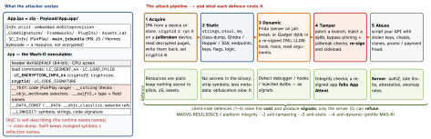

security · folio
In one line: A shipped app runs on a device its owner controls. The IPA is a zip, the Mach-O lists every class and string, App Store FairPlay encryption only stops copying (the code is decrypted in memory to run), and Frida rewrites any function at runtime — so jailbreak checks, pinning and anti-debugging are costs you impose, not boundaries. Assume the client is compromised: secrets and decisions live on the server.
Download PDF Print view LaTeX source


How it works
- FairPlay: the App Store encrypts each executable’s code range (
LC_ENCRYPTION_INFO_64); the kernel decrypts pages as they are mapped on an authorised device. It is DRM against copying, not against reading — a decrypted dump is the standard first step. - Static: ObjC keeps class, method, ivar and protocol names (dynamic dispatch needs them) → full headers. Swift keeps mangled symbols and reflection metadata (type + field names;
SWIFT_REFLECTION_METADATA_LEVELtrims it, breakingMirror). An “obfuscated” literal is decoded at use — hook the decoder. - Frida injects a JS runtime into the process:
Interceptor.attachon any C/Swift address, replace any ObjCimplementation, call functions, dump memory. No jailbreak needed if the attacker re-signs the IPA with FridaGadget inside. - Pinning bypass: hook the trust decision (
SecTrustEvaluateWithError, your delegate, or the TLS layer below) to return “trusted”, or patch the pinned hash. Pinning stops a network attacker, never the device owner. - Jailbreak detection: files (
/Applications/Cydia.app,/etc/apt, rootless/var/jb), writes outside the sandbox,fork()succeeding, suspicious dylibs in_dyld_get_image_name, Frida’s port. Each check is a function — hiding tweaks hook them all; rootless jailbreaks moved the paths. - Anti-debug:
ptrace(PT_DENY_ATTACH)(31; not in the iOS SDK header — viadlsymor an inlinesvc),sysctlP_TRACEDcheck. Release builds lackget-task-allow, so a stock device can’t attach anyway; attackers re-sign or jailbreak, then hookptrace/ patch thesvc.
Example — audit your own release IPA before shipping
unzip -q App.ipa && cd Payload/App.app
otool -l App | grep -A4 LC_ENCRYPTION_INFO # cryptid 0 here
otool -L App # every linked SDK/framework
strings -a App | grep -iE 'secret|api[_-]?key|BEGIN PRIV'
nm -gU App | wc -l # exported symbols left in
codesign -d --entitlements - . # get-task-allow must be false
grep -c 'sk_live' main.jsbundle # RN bundle is plain textfunc debuggerAttached() -> Bool { // Apple QA1361
var info = kinfo_proc(); var size = MemoryLayout<kinfo_proc>.stride
var mib: [Int32] = [CTL_KERN, KERN_PROC, KERN_PROC_PID, getpid()]
return sysctl(&mib, 4, &info, &size, nil, 0) == 0
&& (info.kp_proc.p_flag & P_TRACED) != 0
}
// report, don't crash: the server decides (step-up, limit, review)
api.report(RiskSignals(debugger: debuggerAttached(), jailbreak: jb()))What hardening can — and cannot — do
| can | cannot |
|---|---|
| raise time + skill needed | keep a secret inside the app |
| make mass-scripting harder | stop a determined device owner |
| feed risk signals to the server | be the authorisation decision |
| detect repackaging (with App Attest) | make a jailbroken device trustworthy |
Layering: several independent checks, spread and inlined, reported silently; pair with App Attest (proves genuine app + device) and server rules. Crashing on detection shows the attacker exactly where the check is.
Traps
- “The binary is encrypted by Apple” — FairPlay is DRM; decrypted dumps are routine.
- “We detect jailbreak, so pinning can’t be bypassed” — both are hookable code in the same process.
- XOR’d / split API key — plaintext in memory at the call; Frida prints the argument.
- “Swift can’t be class-dumped” —
@objc/NSObjecttypes can, and Swift metadata names the rest. - RN:
main.jsbundleis a resource — Hermes bytecode decompiles; no secrets in JS.
Remember
“Readable, hookable, re-signable.” Hardening buys time; the server buys safety.